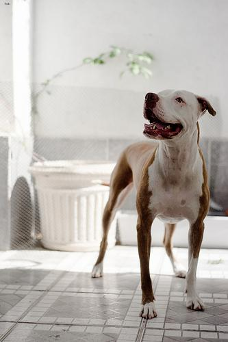
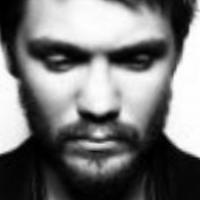

分野・タスクから知る · Computer Vision
画像
何があるか、どこにあるか、どの画素か、どれだけ遠いか。図で比べながら、画像のタスクを一つずつ見ていきます。
画像認識のタスク
ここでは、画像から内容や位置を読み取る認識・計測のタスクを扱います。画像から何を答えてほしいかによって、出力の形が変わります。「犬か猫か」「何歳か」「どこにあるか」「どの画素が車か」は、それぞれ異なる問いです。まず一覧で答えの形を見てから、各タスクの図を見ていきます。
種類を答えるのが分類、数値を答えるのが回帰です。ここでは「画像全体から一つの数値を答える」例を紹介しますが、深度推定や姿勢推定でも数値を予測します。回帰は、それらにも使われる出力の基本形式です。
画像分類
画像分類（image classification）は、画像全体がどのカテゴリに当てはまるかを答えます。ここでは「犬」「猫」の2種類を見分けます。入力は写真、出力はその写真に対応する一つのラベルです。


Oxford-IIIT Petの同じデータセットから犬と猫を1枚ずつ掲載。種別の注釈を「犬」「猫」として表示。新たな推論結果ではない。CC BY-SA 4.0。写真は加工なし。
学習では犬の画像には「犬」、猫の画像には「猫」というラベルを付けたデータを使います。色・姿勢・背景が違う写真でも、動物の特徴から種類を見分けることが目標です。出力のラベルだけでは、画像内のどの範囲が動物なのかは表せません。
このように一つのカテゴリを選ぶ設定を単一ラベル分類と呼びます。一枚に犬と猫が両方写ることを想定し、それぞれの有無を答えるなら、複数のラベルを同時に付ける設定にします。何を答えさせたいかに合わせて、ラベルとデータを用意します。
画像全体からの数値予測（回帰）
数値を予測することを回帰（regression）と呼びます。ここでは、画像全体から一つの数値を答える例として、顔画像から年齢を歳単位で推定します。同じ顔画像データセットの異なる人物でも、入力と出力の形式は共通です。

UTKFaceの同じデータセットから2枚。右の数値はデータの年齢ラベルを出力形式に合わせて表示したもので、新たな推論結果ではない。
「20代」「30代」のような年代のカテゴリを選ぶ設定は分類です。年齢を30.0歳や34.7歳のような数値で出す設定では、回帰として扱えます。学習では顔画像と年齢の組を使い、画像の特徴と数値の対応を学びます。
写真の照明・表情・解像度や個人差によって、見た目から読み取れる年齢には曖昧さがあります。UTKFaceの年齢も推定と人による確認を経た注釈で、本人の生年月日を保証する値ではありません。ここでは、そのような数値を出力するタスクの形を見ています。
物体検出
物体検出（object detection）は、画像内の物体ごとに、位置を示す長方形の枠とクラスを返します。通常は、その検出に対するスコアも付きます。一枚の画像から複数の検出結果を出せるため、「車が2台あり、それぞれここにいる」と表せます。
同じ教材用データ集合の異なる2枚。上は2台、下は3台の街路画像。各タスクで同じ入力を使用。図と出力は教材用の作図で、実モデルの推論結果ではない。
歩行者の位置を知る、棚の商品を数える、といった用途につながります。図の枠には車体だけでなく周囲の背景も入っています。枠は物体の位置とおおよその広がりを表しますが、窓やタイヤまで含めた輪郭そのものを出すわけではありません。重なった物体や小さな物体を、一つずつ見つけることが難しい場面です。
セグメンテーション
セグメンテーション（segmentation）は、物体や背景の領域を画素単位で表すタスクです。医用画像の臓器の輪郭、衛星画像の浸水範囲など、長方形では表しにくい形を取り出せます。何を区別するかによって、次の3種類があります。ここでは同じ街路データの2枚を使い、3種類の出力を比較します。
1. セマンティックセグメンテーション
semantic segmentationは、各画素に「車」「空」「草地」「道路」などのクラスを割り当てます。2台の車は同じ「車」なので同じ色です。画素がどの種類かは分かりますが、出力のラベル自体には車1・車2という個体のIDがありません。
同じ教材用データ集合の異なる2枚。上は2台、下は3台の街路画像。各タスクで同じ入力を使用。図と出力は教材用の作図で、実モデルの推論結果ではない。
道路として使える範囲や土地利用の割合を調べるなど、種類ごとの広がりを知りたい問題に向きます。隣り合う同種の物体を別々に数えるには、別の処理が必要です。
2. インスタンスセグメンテーション
instance segmentationは、物体ごとに別々のマスクを出します。マスクとは、その対象に属する画素の集合です。図の2台は同じ車クラスでも、「車1」と「車2」で色が違います。空や道路などの背景には、この出力ではクラスを付けていません。
同じ教材用データ集合の異なる2枚。上は2台、下は3台の街路画像。各タスクで同じ入力を使用。図と出力は教材用の作図で、実モデルの推論結果ではない。
細胞を一つずつ数えて面積を測る、複数の商品を個別に切り抜く、といった問題につながります。単に種類を付けることに加え、接している同種の物体を別の個体として分ける必要があります。ここでの番号は画像内での区別であり、動画をまたぐ追跡IDとは限りません。
3. パノプティックセグメンテーション
panoptic segmentationは、画像全体の各画素に意味を付けつつ、車や人のように数えられる物体を個体ごとに区別します。車1・車2は別の色、空・草地・道路にもそれぞれのクラスがあります。一つの画素は、一つの領域に属する形で出力をまとめます。
同じ教材用データ集合の異なる2枚。上は2台、下は3台の街路画像。各タスクで同じ入力を使用。図と出力は教材用の作図で、実モデルの推論結果ではない。
街路全体を「移動できる道路」「個々の車」「背景」のように整理したいときに役立ちます。セマンティックとの違いは車の個体IDがあること、インスタンスとの違いは背景も含めて画面全体を扱うことです。
深度推定
深度推定（depth estimation）は、画像内の各位置がカメラからどれだけ離れているかを推定するタスクです。ここでは1枚の写真から推定する単眼深度推定を見ます。出力は画像と対応した数値のマップで、見やすくするために数値を色へ変換しています。
Depth Anything V2の著者公開の同じ結果集から2枚を引用。赤・橙・黄は近い側、青・紫は遠い側。色は表示用で、別の画像との色の一致は同じ実距離を意味しない。画像を押すと拡大。
上段は街路、下段は自転車です。下段の車輪では、細いスポークと隙間から見える地面が異なる奥行きとして表されています。同じ深度推定でも、入力ごとに異なる値のマップを出します。
上段の右手前の車、後方のバス、中央奥の建物の順に見てください。出力では手前の車が橙、バスが緑、遠方が青紫になっています。道路も手前から奥へ連続的に色が変わります。セグメンテーションと違い、同じ道路の内部でも奥行きが違えば値が変わります。
相対深度は「こちらが近い」という遠近関係を表します。メートル単位の深度は、実際の距離を数値として求める設定です。一枚の写真だけでは小さい物体が近くにある場合と、大きい物体が遠くにある場合を見分けにくく、距離の尺度には曖昧さがあります。ロボットの周辺理解や3D再構成につながりますが、この色付きの図をそのまま距離計の目盛りとしては読めません。
Depth Anything V2の追加出力例
{kind=link}
{kind=link}
著者ページのdetail comparisonから同一例を抜粋。カラーマップによって相対的な奥行きを表示。
追加例では、細い境界や隙間にある背景が、深度の出力でどう分かれるかを見ます。
姿勢推定
姿勢推定（pose estimation）は、肩・肘・手首・腰・膝などの特徴点の座標を求めます。人物を一つの枠で囲う検出から一歩進んで、体の各部分がどの位置にあるかを表します。点をつないだ線は、関節の対応を見やすくしたものです。
Bazarevsky et al.（2020）, BlazePose: On-device Real-time Body Pose tracking, Figure 6のヨガ・フィットネスの結果から2枚を引用。各パネルは加工せず掲載。白い点が特徴点、色付きの線が点どうしの接続。画像を押すと拡大。
左の人物は腕を上げて脚を前後に開き、右の人物は両手を床についてしゃがんでいます。姿勢が変わっても、肩・肘・手首、股関節・膝・足首を同じ対応関係で結んでいます。出力はポーズの名前ではなく、それぞれの点の位置です。BlazePoseは顔・手・足を含む33個の特徴点を扱います。
スポーツなら、肩・肘・手首の座標から肘の曲がりを調べたり、連続したフレームで手首の軌跡を見たりできます。2D姿勢は画像上の位置、3D姿勢は奥行きも含む位置です。カメラに対して体が斜めを向くと、画像上の角度と実際の関節角度は変わります。隠れた関節や左右の取り違え、動画での点の揺れも結果の読み取りに関わります。
MediaPipe Poseの追加出力例
{kind=link}
MediaPipe Pose Landmarker公式ガイドの出力例を引用。カメラ入力やモデル実行は不要。 画像を拡大 ↗
追加例では、顔・手・足まで含めた特徴点の配置を見られます。
画像を読み取る研究のほかに、新しい画像を作る生成や、画像の一部を書き換える編集もあります。画像を作る仕組みは生成モデルの全体像で扱います。